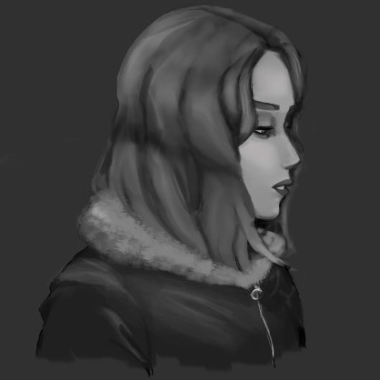

Details
- Title: Girl of Your Dreams: Short Film Fanart
- Artist: Chelsea V. Bahsler
- Description:
-
A painting that I'm working on for a friend of mine.
He just finished recording a short-film, and I drew this painting to celebrate. - Date created: March 12, 2021
- Status: WIP
- Title: Kurapika and Friendship Flowers
- Artist: Chelsea V. Bahsler
- Description:
-
A painting I'm working on of a character from the anime HUNTERXHUNTER.
He has intense moments in the show and I just wanted to see him have a moment of peace. So here he is. - Date created: March 12, 2021
- Status: WIP
- Title: Before Wright: Ace Attorney Fanart
- Artist: Chelsea V. Bahsler
- Description:
-
A painting I've long abandonned.
I adore this couple from ace attorney and I drew this around valentine's day to express that feeling. - Date created: February 8, 2021
- Status: abandonned